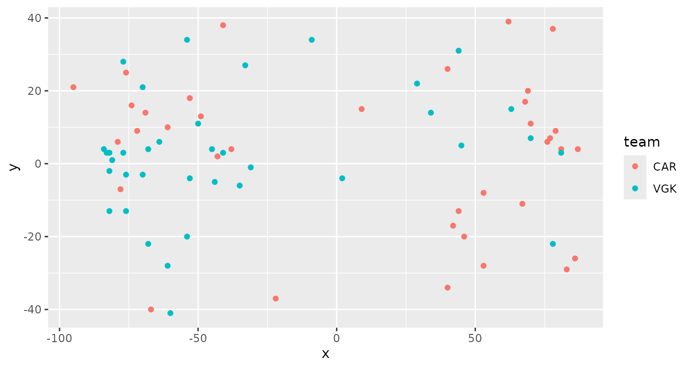
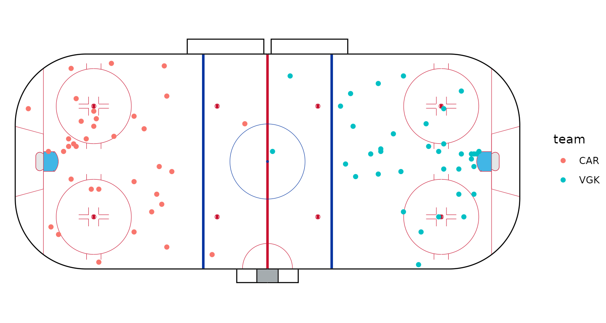
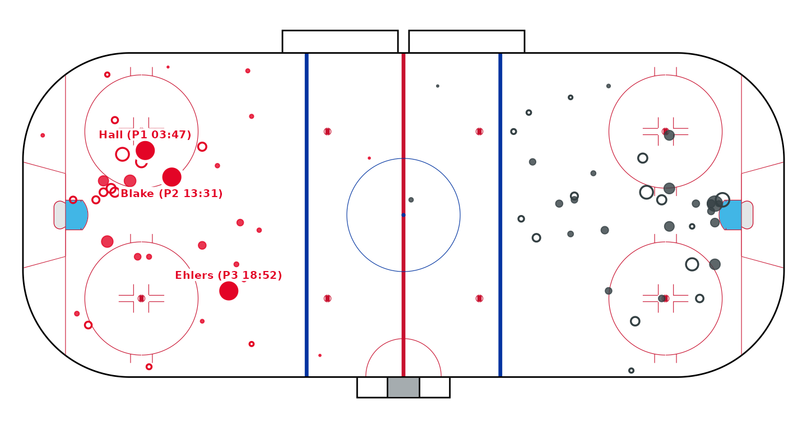
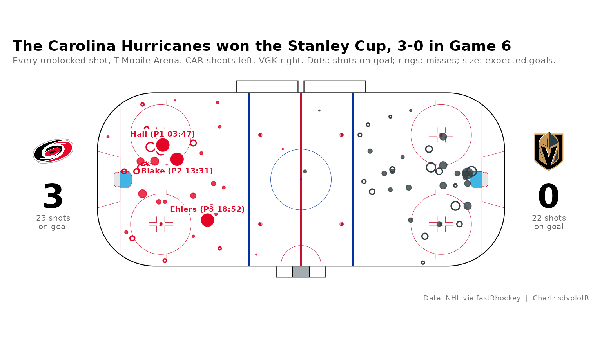
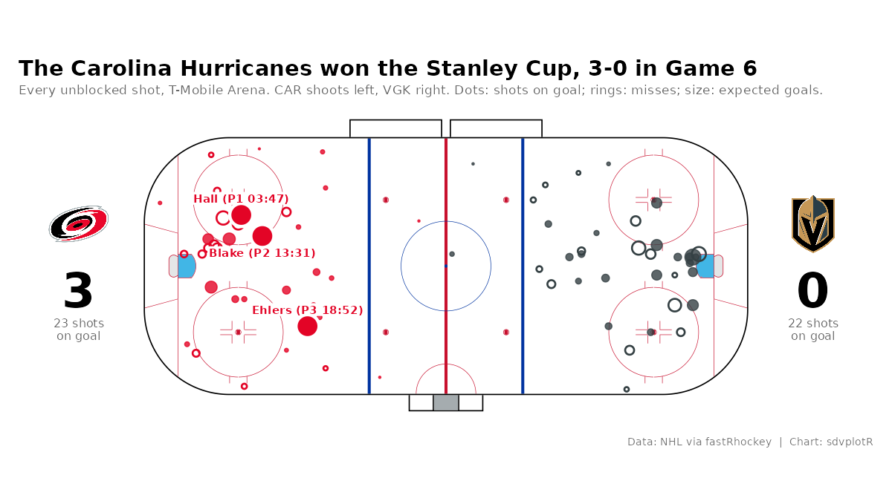

On this page
The brief: the morning after the Stanley Cup
clincher, post one image of the game: every unblocked shot on a rink,
each team in its colors, the goals called out, and the score. It goes
out at 1200 x 675 for X and Bluesky and 1600 x 900 for the blog recap.
The play-by-play is the SportsDataverse NHL release through fastRhockey,
and sdv_surface() draws the rink.
library(sdvplotR)
library(ggplot2)
library(dplyr, warn.conflicts = FALSE)
season <- 2026 # the 2025-26 season: NHL seasons are named by the year they end
cup_final <- 2025030416 # Stanley Cup Final, Game 6
out_dir <- tempfile("sdvplotR-recipe-") # where the exports go; use your own folder
dir.create(out_dir)1. Get the data
load_nhl_pbp() reads the whole season’s play-by-play,
one row per event, and load_nhl_schedule() the games with
their final scores. The game’s own row says who played where; the series
rows confirm this game ended the Final.
pbp <- fastRhockey::load_nhl_pbp(season)
schedule <- fastRhockey::load_nhl_schedule(season)
game <- filter(schedule, game_id == cup_final)
final <- schedule |>
filter(playoff_round == 4, game_id <= cup_final) |>
mutate(winner = if_else(home_score > away_score, home_team_abbr, away_team_abbr))
count(final, winner)
#> # A tibble: 2 × 2
#> winner n
#> <chr> <int>
#> 1 CAR 4
#> 2 VGK 2
stopifnot(max(count(final, winner)$n) == 4) # the winner's fourth win: the clincher
shots <- pbp |>
filter(game_id == cup_final, event_type %in% c("SHOT", "MISSED_SHOT", "GOAL")) |>
transmute(
event_type, period, period_time,
team = event_team_abbr, shooter = event_player_1_name,
x, y, x_fixed, y_fixed, xg
)
sprintf("%s %d at %s %d", game$away_team_abbr, game$away_score, game$home_team_abbr, game$home_score)
#> [1] "CAR 3 at VGK 0"
count(shots, team, event_type)
#> # A tibble: 5 × 3
#> team event_type n
#> <chr> <chr> <int>
#> 1 CAR GOAL 3
#> 2 CAR MISSED_SHOT 13
#> 3 CAR SHOT 20
#> 4 VGK MISSED_SHOT 15
#> 5 VGK SHOT 22Blocked shots are left out: the feed records where a blocked shot was blocked, not where it was taken.
2. The first draft
Scatter the coordinates as they come, one color per team.
ggplot(shots, aes(x, y, color = team)) +
geom_point()
Both teams have shots at both ends: teams switch ends every period, and the feed records where on the ice each shot happened. With no rink the dots float in space, and the goals look like every other shot.
3. One end per team, on a rink
The release already carries x_fixed and
y_fixed: every event rotated so the home team shoots right
and the visitors left for the whole game.
sdv_surface("nhl") draws a regulation rink in the same
coordinates (feet, center ice at 0, 0) and returns a ggplot, so the
shots are just more layers.
sdv_surface("nhl") +
geom_point(aes(x_fixed, y_fixed, color = team), data = shots)
4. Team colors, shot types and the goals
Each team’s shots take its primary color through
scale_color_sdv(). A shot on goal is a filled dot, a miss
an open ring, and each dot is sized by its expected goals
(xg, the release’s chance that a shot like it scores), so
the dangerous chances stand out from the long-range ones. A goal is a
large ringed dot with the scorer’s name and the time in a white box, so
it reads over the shots and the rink lines; the labels alternate above
and below, so two goals close together keep their labels apart. The
drawing goes in a function so the final layout can reuse it.
goals <- shots |>
filter(event_type == "GOAL") |>
mutate(
label = paste0(sub(".* ", "", shooter), " (P", period, " ", period_time, ")"),
vjust = if_else(row_number() %% 2 == 1, -0.8, 1.8) # above, below, above: close goals stay apart
)
draw_shots <- function(...) {
sdv_surface("nhl", ...) +
geom_point(
aes(x_fixed, y_fixed, color = team, size = xg),
data = filter(shots, event_type == "SHOT"), alpha = 0.8
) +
geom_point(
aes(x_fixed, y_fixed, color = team, size = xg),
data = filter(shots, event_type == "MISSED_SHOT"), shape = 1, stroke = 0.9
) +
geom_point(
aes(x_fixed, y_fixed, fill = team),
data = goals, shape = 21, size = 6, color = "white", stroke = 1.5
) +
geom_label(
aes(x_fixed, y_fixed, label = label, color = team, vjust = vjust),
data = goals, size = 2.6, fontface = "bold",
fill = "white", linewidth = 0, label.padding = unit(0.12, "lines")
) +
scale_color_sdv(sport = "nhl", guide = "none") +
scale_fill_sdv(sport = "nhl", guide = "none") +
scale_size_area(max_size = 4.5, guide = "none")
}
draw_shots()
#> Warning: Removed 1 row containing missing values or values outside the scale range
#> (`geom_point()`).
5. The frame: score, teams and story
A shot map needs a scoreboard. Each team gets a block on the side of
the rink it attacks: its logo, its score and its shots on goal (shots
plus goals), placed past the boards. xlims widens the
rink’s canvas to make room, and goes to ‘sportyR’ through
sdv_surface()’s .... The title says what
happened, the subtitle how to read the rink, and the caption carries the
source.
club_names <- team_reference("nhl") |> select(team_abbr, team_name)
scoreboard <- tibble(
team = c(game$away_team_abbr, game$home_team_abbr),
x = c(-122, 122), # outside the boards, on the side each team attacks
score = c(game$away_score, game$home_score)
) |>
left_join(
count(filter(shots, event_type %in% c("SHOT", "GOAL")), team, name = "sog"),
by = "team"
) |>
left_join(club_names, by = c("team" = "team_abbr"))
winner <- slice_max(scoreboard, score, n = 1)
loser <- slice_min(scoreboard, score, n = 1)
shot_map <- function() {
draw_shots(xlims = c(-142, 142)) +
geom_sdv_logos(aes(x = x, y = 14, team = team), data = scoreboard, sport = "nhl", height = 0.2) +
geom_text(aes(x = x, y = -8, label = score), data = scoreboard, size = 11, fontface = "bold") +
geom_text(
aes(x = x, y = -21, label = paste(sog, "shots\non goal")),
data = scoreboard, size = 2.7, color = "grey40", lineheight = 0.9
) +
labs(
title = sprintf(
"The %s won the Stanley Cup, %d-%d in Game 6",
winner$team_name, winner$score, loser$score
),
subtitle = sprintf(
"Every unblocked shot, %s. %s shoots left, %s right. Dots: shots on goal; rings: misses; size: expected goals.",
game$venue, game$away_team_abbr, game$home_team_abbr
),
caption = "Data: NHL via fastRhockey | Chart: sdvplotR"
) +
theme(
plot.title = element_text(face = "bold", size = 14, margin = margin(b = 3)),
plot.subtitle = ggtext::element_textbox_simple(color = "grey40", size = 8.5, margin = margin(b = 4)),
plot.caption = element_text(color = "grey45", size = 7),
plot.margin = margin(10, 12, 6, 12),
plot.background = element_rect(fill = "white", color = NA)
)
}
shot_map()
#> Warning: Removed 1 row containing missing values or values outside the scale range
#> (`geom_point()`).
6. Export for X and the blog
1200 x 675 for X and Bluesky and 1600 x 900 for the blog are the same
16:9 shape, so one 8 x 4.5 in plot serves both; only the
dpi changes (150 and 200). Inches times dpi gives the exact
pixels, and the logos, sized as a share of the panel, scale with
everything else.
chart <- shot_map()
files <- c(
file.path(out_dir, "nhl_shot_map_1200x675.png"),
file.path(out_dir, "nhl_shot_map_1600x900.png")
)
ggsave(files[1], chart, width = 8, height = 4.5, dpi = 150)
#> Warning: Removed 1 row containing missing values or values outside the scale range
#> (`geom_point()`).
ggsave(files[2], chart, width = 8, height = 4.5, dpi = 200)
#> Warning: Removed 1 row containing missing values or values outside the scale range
#> (`geom_point()`).
magick::image_info(magick::image_read(files))[c("width", "height")]
#> # A tibble: 2 × 2
#> width height
#> <int> <int>
#> 1 1200 675
#> 2 1600 900
magick::image_read(files[1])